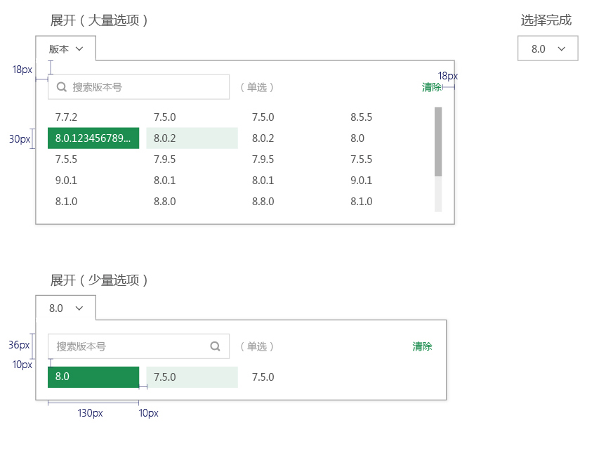
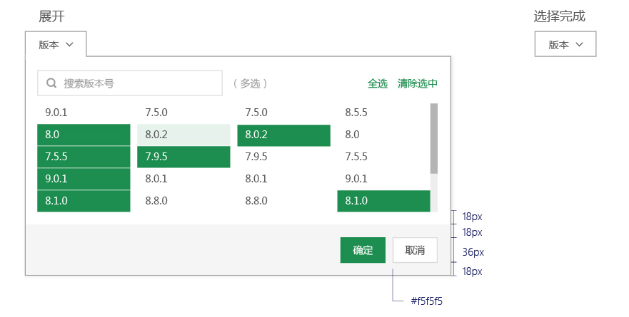

筛选器
单选筛选器

- 选择完成后，控件显示被选项的名称，
- 如果过过长，按照列表展示的截取方式截取字段。
- 选项横向排列，一行4列，超过5行列表出现滚动条
- 选项
字体原始：14px, #575757
字体经过：14px, #575757, (bg color@100)
字体选中：14px, #ffffff, (bg color@500)

多选筛选器


- 选择完成后，控件名称不变化，
- 并在控件下方出现提示框，显示被筛选的项目。
- 选项
字体原始：14px, #575757
字体经过：14px, #575757, (bg color @100)
字体选中：14px, #ffffff, (bg color @500) - 提示框
框高：40px, (bg color #f5f5f5)
字体：(选中项目）14px, #@500, Bold
字体：(其他文字）14px, #575757